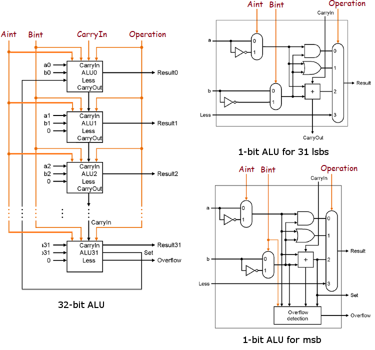
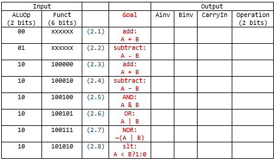
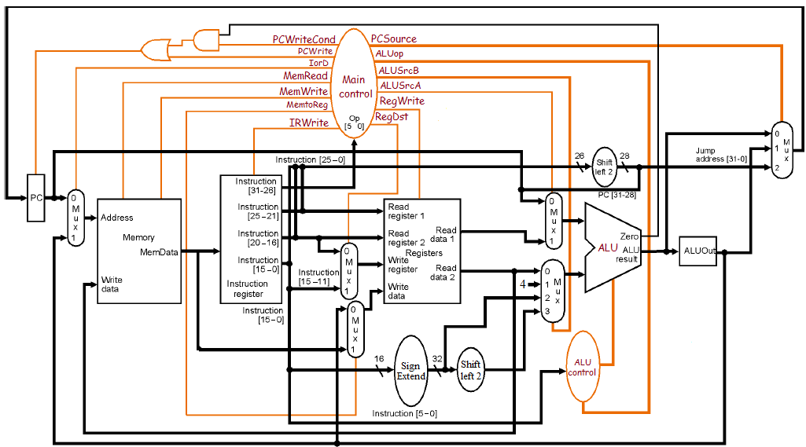
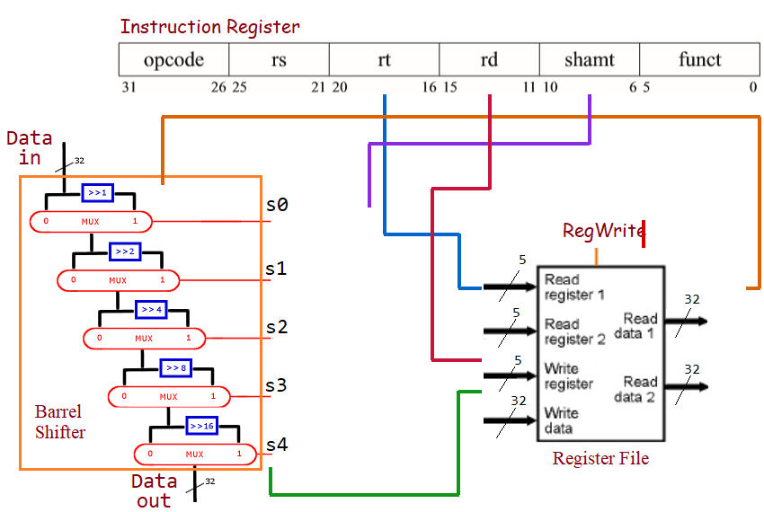
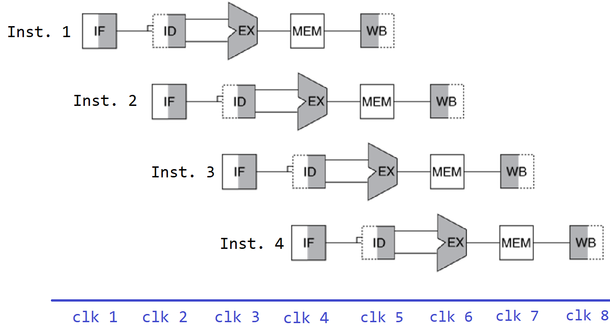
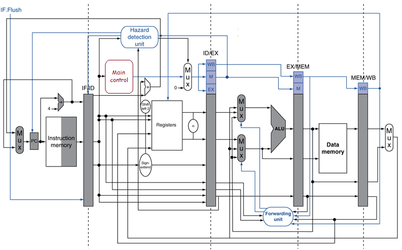

คู่มือเจาะลึกข้อสอบสถาปัตยกรรมคอมพิวเตอร์
เข้าใจตั้งแต่รากฐานของระบบตัวเลขคอมพิวเตอร์ การคำนวณบิต การเกิด Overflow ไปจนถึงการออกแบบ ALU, Multicycle Datapath, วงจร Barrel Shifter และการทำงานของ 5-Stage Pipeline อย่างเป็นขั้นเป็นตอนพร้อมสื่อจำลอง Interactive
พีชคณิตคอมพิวเตอร์ 4-bit & Overflow
Signed vs Unsigned Addition, ทำไมเครื่องหมายจึงเปลี่ยน, นิยาม Overflow เชิงคณิตศาสตร์และระดับฮาร์ดแวร์ ($C_{in} \oplus C_{out}$).
ตารางสัญญาณควบคุม ALU (ALU Control)
วิเคราะห์ 1-bit ALU 31 บิตแรก และ ALU31 MSB, กำหนดสัญญาณ Ainv, Binv, CarryIn, Operation สำหรับ add, sub, and, or, nor, slt.
Multicycle Machine (3-State Machine)
เติมสัญญาณ State 0, 1, 2 สำหรับคำสั่ง j, beq, R-type, lw, sw พร้อมตาราง Main Control Signal Active-High 14 ช่องสัญญาณ.
SRL Datapath & Barrel Shifter Wiring
โยงสายสัญญาณฮาร์ดแวร์ IR, Barrel Shifter, Register File สำหรับคำสั่ง srl rd, rt, shamt ระบุบิตชัดเจนไม่คลุมเครือ.
5-Stage Pipeline Hazards & Performance
คำนวณเวลาการรัน $N$ คำสั่ง, วิเคราะห์ Structural, Data (RAW), Control Hazard, วิธีการแก้: Forwarding, Stall, Scheduling, Branch Prediction.
การส่งผ่านสัญญาณควบคุมใน Pipeline
ไขข้อข้องใจว่าทำไม Control Unit อยู่ที่ ID stage ชุดเดียว แต่สั่งการ stage EX, MEM, WB ในอนาคตได้อย่างถูกต้องแม่นยำ.
4-Bit Computer Arithmetic & Overflow
ทฤษฎีสำคัญ: ทำไมเกิด Overflow? ดูอย่างไรให้แม่น 100%
ในระบบ 4 บิต คอมพิวเตอร์สามารถแทนค่าตัวเลขได้เพียง $2^4 = 16$ สถานะเท่านั้น โดยแบ่งเป็น 2 รูปแบบหลัก:
1. Unsigned (ไม่มีเครื่องหมาย)
- • ช่วงค่าที่เก็บได้: 0 ถึง 15 ($[0, 2^n - 1]$)
- • บิตทุกตัวคือค่าน้ำหนักบวก ($2^3, 2^2, 2^1, 2^0$)
- • กฎการเกิด Overflow: จะเกิดเมื่อผลรวมทางคณิตศาสตร์ เกิน 15
- • ดูง่ายๆ ในระดับบิต: มี Carry out (ตัวทดหลุดออกจากบิตสูงสุด MSB) หรือไม่? ถ้ามี Carry out = 1 $\implies$ Overflow = True!
2. Signed (Two's Complement)
- • ช่วงค่าที่เก็บได้: -8 ถึง +7 ($[-2^{n-1}, 2^{n-1} - 1]$)
- • บิต MSB (บิตซ้ายสุด) มีค่าน้ำหนักเป็น $-2^3 = -8$ (แสดงเครื่องหมาย: 0=บวก, 1=ลบ)
- • กฎเหล็กการเกิด Overflow: เครื่องหมายของผลลัพธ์ ขัดกับหลักตรรกะทางคณิตศาสตร์:
🔸 (บวก) + (บวก) แล้วได้ผลลัพธ์เป็น (ลบ) (MSB: $0 + 0 \to 1$) $\implies$ Overflow!🔸 (ลบ) + (ลบ) แล้วได้ผลลัพธ์เป็น (บวก) (MSB: $1 + 1 \to 0$) $\implies$ Overflow!🔹 (บวก) + (ลบ) $\implies$ ไม่มีวันเกิด Overflow เด็ดขาด! เพราะค่าอยู่ระหว่างสองตัวเสมอ
- • สูตรฮาร์ดแวร์เช็ค Overflow: $V = C_{in} \oplus C_{out}$ (Carry เข้า MSB ต้องเท่ากับ Carry ออกจาก MSB ถ้าไม่เท่ากันคือ Overflow)
เครื่องมือทดลองบวก 4-Bit Binary & ตรวจสอบ Overflow สดๆ
คลิกที่บิตเพื่อสลับ 0/1 หรือเลือกข้อสอบจากปุ่มด่วนด้านล่างเพื่อดูผลทันที
ตารางเฉลยข้อ 1 ทุกข้อย่อย พร้อมวิธีคิดบิตต่อบิต
| ข้อ | Arithmetic operation | Operand 1 | Operand 2 | Result (in 4 bits) | Overflow | คำอธิบายเหตุผลอย่างละเอียด (ทำไมถึง True/False) |
|---|---|---|---|---|---|---|
| 1.1 | Signed Addition | 0b0010 (+2) | 0b0100 (+4) | 0110 | False | $(+2) + (+4) = +6$ ค่าอยู่ในช่วง $[-8, 7]$ เครื่องหมายบวก+บวกได้บวก (MSB=0) ไม่เกิด Overflow |
| 1.2 | Unsigned Addition | 0b0010 (2) | 0b0100 (4) | 0110 | False | $2 + 4 = 6$ ค่าอยู่ในช่วง $[0, 15]$ และไม่มี Carry out ($C_{out}=0$) ไม่เกิด Overflow |
| 1.3 | Signed Addition | 0b0101 (+5) | 0b0110 (+6) | 1011 | True |
💥 บวก+บวก ได้ลบ! $(+5) + (+6) = +11$ เกินขอบบน $(+7)$ ค่าล้นวนไปติดลบเป็น 1011 (ซึ่งคือ -5) และ Carry in เข้าบิต MSB = 1 แต่ Carry out จาก MSB = 0 ($C_{in} \neq C_{out}$)
|
| 1.4 | Unsigned Addition | 0b0101 (5) | 0b0110 (6) | 1011 | False | $5 + 6 = 11$ ใน Unsigned ยังไม่เกิน 15 และไม่มี Carry out หลุด 4 บิต ($C_{out}=0$) จึงไม่เกิด Overflow |
| 1.5 | Signed Addition | 0b1111 (-1) | 0b1011 (-5) | 1010 | False |
$(-1) + (-5) = -6$ ค่า $-6$ อยู่ในช่วง $[-8, 7]$ พอดี (ใน 4 บิตคือ 1010) ลบ+ลบ ได้ลบ (MSB=1) และ $C_{in}=1, C_{out}=1$ ($1 \oplus 1 = 0$) ไม่เกิด Overflow
|
| 1.6 | Signed Addition | 0b1001 (-7) | 0b1011 (-5) | 0100 | True |
💥 ลบ+ลบ ได้บวก! $(-7) + (-5) = -12$ ต่ำกว่าขอบล่าง $(-8)$ ผลบวก 5 บิตคือ 10100 ตัดเหลือ 4 บิตคือ 0100 (+4) ลบ+ลบได้บวก และ $C_{in}=0, C_{out}=1$ ($0 \oplus 1 = 1$)
|
| 1.7 | Signed Addition | 0b1001 (-7) | 0b0011 (+3) | 1100 | False |
$(-7) + (+3) = -4$ บวกต่างเครื่องหมายไม่มีวันเกิด Signed Overflow ผลลัพธ์ 1100 แทนค่า -4 ถูกต้อง
|
| 1.8 | Signed Addition | 0b0111 (+7) | 0b1000 (-8) | 1111 | False |
$(+7) + (-8) = -1$ บวกต่างเครื่องหมายไม่เกิด Overflow ผลลัพธ์ 1111 แทนค่า -1 พอดี
|
ALU Control Logic & Circuit Analysis

คลิกที่รูปเพื่อขยายใหญ่

ทำความเข้าใจโครงสร้าง 1-bit ALU
ในรูปที่ 1 สังเกตว่าแต่ละบิตของ ALU มีส่วนประกอบสำคัญดังนี้:
• Ainv: เลือกว่าจะใช้ค่า $a$ (เมื่อ 0) หรือกลับบิตเป็น $\bar{a}$ (เมื่อ 1)
• Binv: เลือกว่าจะใช้ค่า $b$ (เมื่อ 0) หรือกลับบิตเป็น $\bar{b}$ (เมื่อ 1)
• การลบ (Subtract: A - B): ใช้สูตร Two's complement คือ $A + \bar{B} + 1$
$\implies$
Binv = 1, CarryIn = 1, Operation = 10 (Add)• การทำ NOR ($\overline{A \lor B}$): ตามกฎของเดอมอร์แกน (De Morgan's Laws):
$\overline{A \lor B} = \bar{A} \land \bar{B}$
$\implies$ กลับบิตทั้งคู่
Ainv = 1, Binv = 1 แล้วนำเข้าเกต AND (Operation = 00)!• การทำ slt (Set on Less Than): ให้ลบ $A - B$ (Binv=1, CarryIn=1) แล้วบิต Set จาก MSB จะถูกโยงมาเข้าช่อง Less (Op=11) ของบิตที่ 0!
เฉลยตารางสัญญาณควบคุม ALU (ตารางที่ 1 ฉบับสมบูรณ์)
| Input | ข้อ | Goal (คำสั่งที่ต้องการ) | Output (สัญญาณควบคุม) | เหตุผลและคำอธิบาย | ||||
|---|---|---|---|---|---|---|---|---|
| ALUOp (2b) | Funct (6b) | Ainv | Binv | CarryIn | Operation (2b) | |||
| 00 | xxxxxx | (2.1) | add: A + B (เช่น lw/sw) | 0 | 0 | 0 | 10 | บวกปกติ ไม่กลับบิต ไม่ทด ใช้ Adder (Op 10) |
| 01 | xxxxxx | (2.2) | subtract: A - B (เช่น beq) | 0 | 1 | 1 | 10 | ลบคือ $A+\bar{B}+1 \implies$ Binv=1, CarryIn=1, Op 10 |
| 10 | 100000 | (2.3) | add: A + B (R-type add) | 0 | 0 | 0 | 10 | R-type คำสั่ง add ใช้ Adder (Op 10) |
| 10 | 100010 | (2.4) | subtract: A - B (R-type sub) | 0 | 1 | 1 | 10 | R-type คำสั่ง sub กลับบิต B และบวก 1 ด้วย CarryIn |
| 10 | 100100 | (2.5) | AND: A & B | 0 | 0 | 0 (หรือ x) | 00 | เลือกช่องเกต AND (Op 00), CarryIn เป็น 0 หรือ x |
| 10 | 100101 | (2.6) | OR: A | B | 0 | 0 | 0 (หรือ x) | 01 | เลือกช่องเกต OR (Op 01), CarryIn เป็น 0 หรือ x |
| 10 | 100111 | (2.7) | NOR: ~(A | B) | 1 | 1 | 0 (หรือ x) | 00 | ไฮไลต์! De Morgan: $\bar{A} \cdot \bar{B} \implies$ Ainv=1, Binv=1 แล้วเลือก AND (00) |
| 10 | 101010 | (2.8) | slt: A < B ? 1 : 0 | 0 | 1 | 1 | 11 | ตั้งลบ (Binv=1, CarryIn=1) แล้วเลือกช่อง Less (Op 11) เพื่อรับค่า Set |
Multicycle Machine & 3-State Control Logic
แผนภาพสถาปัตยกรรม Multicycle Machine (รูปที่ 2)

ใน 3-state machine แต่ละคำสั่งจะใช้เวลาไม่เกิน 3 รอบนาฬิกา (State 0, State 1, และ State 2)
เฉลยตารางที่ 3: การทำงานและสัญญาณควบคุมในแต่ละ Step
เติมส่วนที่ขาดหายไป (?)| Step | Jump: j | Branch: beq | R-type | Load: lw | Store: sw |
|---|---|---|---|---|---|
| 0 Fetch |
การทำงาน:
IR <= Mem[PC]; PC <= PC + 4สัญญาณ: IorD=0, MemRead=1, IRWrite=1, ALUSrcA=0, ALUSrcB=01, ALUOp=00, PCSource=00, PCWrite=1
|
||||
| 1 Decode / Ex |
PC <= [PC[31:28], IR[25:0], 00]PCSource=10, PCWrite=1 (เสร็จสิ้นคำสั่ง) |
ALUOut <= PC + (signext(IR[15:0]) << 2)ALUSrcA=0, ALUSrcB=11, ALUOp=00 |
ALUOut <= A op BALUSrcA=1, ALUSrcB=00, ALUOp=10 |
ALUOut <= A + signextALUSrcA=1, ALUSrcB=10, ALUOp=00 *(เติมส่วนที่หายไป)* |
ALUOut <= A + signext ALUSrcA=1, ALUSrcB=10, ALUOp=00 *(เติมส่วนที่หายไป)* |
| 2 Complete | - (จบตั้งแต่ step 1) |
if(A==B) PC <= ALUOutALUSrcA=1, ALUSrcB=00, ALUOp=01, PCSource=01, PCWriteCond=1 |
Reg[rd] <= ALUOutRegDst=1, RegWrite=1, MemtoReg=0 |
Reg[rt] <= Mem[ALUOut]IorD=1, MemRead=1, MemtoReg=1, RegDst=0, RegWrite=1 |
Mem[ALUOut] <= B IorD=1, MemWrite=1 |
เฉลยตารางที่ 4: ตารางสถานะสัญญาณควบคุมหลัก (Main Control)
*ตามเงื่อนไขโจทย์: อุปกรณ์ทุกตัวเป็น active high, ใช้เลข 0 แทน "don't care" สำหรับสัญญาณควบคุม, และ xxxxxx สำหรับ Opcode ที่ยังไม่ระบุคำสั่ง
| State | Opcode | PCWrite | PCWriteCond | MemWrite | MemRead | IRWrite | RegWrite | PCSource | IorD | MemtoReg | RegDst | ALUOp | ALUSrcA | ALUSrcB | Next state |
|---|---|---|---|---|---|---|---|---|---|---|---|---|---|---|---|
| 0 | xxxxxx | 1 | 0 | 0 | 1 | 1 | 0 | 00 | 0 | 0 | 0 | 00 | 0 | 01 | 1 |
| 1 | 000000 (R-type) | 0 | 0 | 0 | 0 | 0 | 0 | 00 | 0 | 0 | 0 | 10 | 1 | 00 | 2 |
| 1 | 000010 (j) | 1 | 0 | 0 | 0 | 0 | 0 | 10 | 0 | 0 | 0 | 00 | 0 | 00 | 0 |
| 1 | 000100 (beq) | 0 | 0 | 0 | 0 | 0 | 0 | 00 | 0 | 0 | 0 | 00 | 0 | 11 | 2 |
| 1 | 100011 (lw) | 0 | 0 | 0 | 0 | 0 | 0 | 00 | 0 | 0 | 0 | 00 | 1 | 10 | 2 |
| 1 | 101011 (sw) | 0 | 0 | 0 | 0 | 0 | 0 | 00 | 0 | 0 | 0 | 00 | 1 | 10 | 2 |
| 2 | 000000 (R-type) | 0 | 0 | 0 | 0 | 0 | 1 | 00 | 0 | 0 | 1 | 00 | 0 | 00 | 0 |
| 2 | 000100 (beq) | 0 | 1 | 0 | 0 | 0 | 0 | 01 | 0 | 0 | 0 | 01 | 1 | 00 | 0 |
| 2 | 100011 (lw) | 0 | 0 | 0 | 1 | 0 | 1 | 00 | 1 | 1 | 0 | 00 | 0 | 00 | 0 |
| 2 | 101011 (sw) | 0 | 0 | 1 | 0 | 0 | 0 | 00 | 1 | 0 | 0 | 00 | 0 | 00 | 0 |
Datapath Connection for SRL & Barrel Shifter
ทฤษฎีคำสั่ง srl (Shift Right Logical) ในสถาปัตยกรรม MIPS
รูปแบบคำสั่ง: srl $rd, $rt, shamt
เป็นคำสั่งประเภท R-type ที่มีความพิเศษที่สุดในกลุ่ม เพราะ:
rs! ใน MIPS สถาปัตยกรรมกำหนดให้บิต [20:16] ซึ่งเป็นฟิลด์ rt เป็นตัวเก็บค่าตั้งต้นที่จะนำมาเลื่อนบิต ส่วน rs [25:21] จะไม่ได้ใช้งาน (เป็น 00000)
shamt [10:6] มีขนาด 5 บิต ($2^5 = 32$) ซึ่งตรงกับสัญญาณควบคุม s4, s3, s2, s1, s0 ของ Barrel Shifter แบบ 1 ต่อ 1 พอดี
rd [15:11] เป็นตัวชี้ว่าจะนำผลลัพธ์จาก Barrel Shifter ไปบันทึกลงรีจิสเตอร์ตัวใดใน Register File โดยเปิดสัญญาณ RegWrite = 1
แผนภาพการเชื่อมต่อสายสัญญาณ (Datapath Solution)
เปรียบเทียบรูปว่างในข้อสอบ กับภาพเฉลยการเดินสายสัญญาณที่ถูกต้อง 100%

รายละเอียดการโยงสายสัญญาณทั้ง 6 จุด (ต้องระบุบิตชัดเจน):
ส่งหมายเลขรีจิสเตอร์ต้นทาง 5 บิตไปยังช่องอ่านของ Register File
ส่งข้อมูล 32 บิตที่อ่านได้จาก Register File เข้าไปเป็นตัวตั้งใน Barrel Shifter
บิต 6 เข้า s0 (shift 1), บิต 7 เข้า s1 (shift 2), บิต 8 เข้า s2 (shift 4), บิต 9 เข้า s3 (shift 8), บิต 10 เข้า s4 (shift 16)
นำค่าผลลัพธ์ที่เลื่อนบิตเสร็จแล้ว ส่งกลับไปรอเขียนลง Register File
ระบุหมายเลขรีจิสเตอร์ปลายทาง $rd ที่จะเขียนข้อมูลทับ
เปิดการอนุญาตให้บันทึกข้อมูลลงรีจิสเตอร์
5-Stage Pipeline Timing & Hazard Terminology
แผนภาพการทำงานของ 5-Stage Pipeline (รูปที่ 4)

เครื่องคำนวณเวลาการทำงานของ Pipeline (สำหรับข้อ 5.1)
เฉลยคำถามและ Terminology ครบทั้ง 10 ข้อย่อย (5.1 - 5.10)
สูตร: $\text{Cycles} = 5 + (N - 1)$
• 1 คำสั่ง: 5 cycles = 5 ns (หรือ $5\,\mu\text{s}$)
• 10 คำสั่ง: $5 + 9 = 14$ cycles = 14 ns (หรือ $14\,\mu\text{s}$)
• 1,000,000 คำสั่ง: $1,000,004$ cycles = 1,000,004 ns $\approx$ 1.000004 ms (หรือ 1.000004 s)
คำสั่งที่ 1 อ่านข้อมูล (MEM) และคำสั่งที่ 4 อ่านคำสั่ง (IF) จากหน่วยความจำเดียวกันใน clock เดียวกัน เรียกว่า:
คำสั่งที่ 1 เป็น beq ผลเปรียบเทียบยังไม่ออก แต่คำสั่งที่ 2 ถูก fetch เข้ามาแล้ว อาจเป็นคำสั่งผิด เรียกว่า:
คำสั่งที่ 2 ต้องใช้ $s0 ใน clk 4 แต่คำสั่งที่ 1 ยังไม่เขียนลง register จนถึง clk 5 เรียกว่า:
เพิ่มสายส่งข้อมูลจาก EX stage ของคำสั่งที่ 1 ตรงเข้า ALU ของคำสั่งที่ 2 โดยไม่ต้องรอเขียนลง register เรียกว่า:
คำสั่งที่ 1 เป็น lw ข้อมูลจะออกจาก memory ตอนสิ้นสุด clk 4 ทำให้คำสั่งถัดไป Forwarding ใน clk 4 ไม่ทัน เรียกว่า:
วิธีการพักการทำคำสั่งที่ 2 ไว้ 1 รอบนาฬิกา เพื่อรอให้ข้อมูลจาก memory พร้อม เรียกว่า:
กลไกที่ Compiler สลับลำดับคำสั่งที่ไม่มีผลกระทบต่อ logic มาแทรกเพื่อหลีกเลี่ยงการ stall เรียกว่า:
เทคนิคการทำนายล่วงหน้าว่าจะกระโดดหรือไม่ (Branch Prediction) ใช้บรรเทาปัญหาใด:
ลำดับชั้นหน่วยความจำ (L1/L2/L3 Cache) ช่วยลดปัญหาของ pipeline ในเรื่องใด:
Pipeline Control Signal Propagation Mechanism
แผนภาพสถาปัตยกรรม Pipeline Machine (รูปที่ 5)

สังเกตบล็อกสีเขียวอ่อนใน Stage Registers ที่เขียนว่า EX, MEM, WB นั่นคือเส้นทางที่สัญญาณควบคุมเดินทางไปด้วย!
คำถามจากข้อสอบ:
"สังเกตว่า หน่วย control ซึ่งเป็นหน่วยที่จ่ายสัญญาณควบคุมอุปกรณ์ต่างๆ มีอยู่ชุดเดียว อยู่ที่ ID stage (ระหว่าง IF/ID register และ ID/EX register ในรูป). อภิปรายสั้นๆ ว่า กลไกอะไรที่ทำให้ stages อื่นๆ หลัง ID stage ได้รับสัญญาณควบคุมที่ถูกต้อง."
แนวทางการเขียนตอบให้ได้คะแนนเต็ม 10 คะแนน
1. ชื่อกลไก: กลไก Pipelined Control (การส่งผ่านสัญญาณควบคุมควบคู่ไปกับคำสั่งผ่าน Stage Registers)
2. หลักการทำงาน: หน่วย Main Control ที่อยู่ที่ ID stage จะทำการถอดรหัส Opcode และสร้างสัญญาณควบคุมของ ทุก Stage ที่เหลือ ออกมาพร้อมกันทั้งหมดในคราวเดียว:
- สัญญาณสำหรับ EX stage: เช่น
ALUOp,ALUSrc,RegDst - สัญญาณสำหรับ MEM stage: เช่น
Branch,MemRead,MemWrite - สัญญาณสำหรับ WB stage: เช่น
RegWrite,MemtoReg
3. การเดินทางของสัญญาณ (Propagation Steps):
ID/EX register เมื่อคำสั่งเข้าสู่ EX stage สัญญาณ EX จะถูกดึงไปใช้ ส่วน MEM และ WB จะถูกส่งต่อ
EX/MEM register เมื่อเข้าสู่ MEM stage สัญญาณ MEM จะถูกนำไปควบคุม Data Memory ส่วน WB ส่งต่อไปอีกขั้น
MEM/WB register และนำไปควบคุมการเปิดให้เขียนลง Register File (RegWrite) และเลือกค่าจาก MUX (MemtoReg)
สรุปคำตอบ: สัญญาณควบคุมจะเดินทางไปพร้อมกับข้อมูลคำสั่งนั้นๆ ทีละขั้นตามรอบสัญญาณนาฬิกาผ่าน Stage Registers เสมือนแพ็คเกจข้อมูลที่ติดตัวคำสั่งไป ทำให้เมื่อคำสั่งเดินทางไปถึง stage ใด สัญญาณควบคุมที่เกี่ยวข้องกับคำสั่งนั้นก็เดินทางไปถึง stage นั้นในเวลาเดียวกันอย่างแม่นยำเสมอ